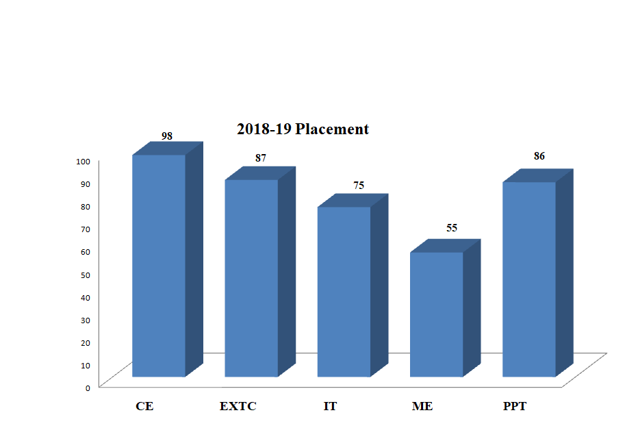

PLACEMENTS
Utmost importance is given to placement related activities to ensure that all successful graduates receive suitable placements. Over the past several years, a strong placement network has been developed with industries in the manufacturing, engineering, finance, information technology, publication and other sectors. This has been achieved through constant interaction with the industry by way of seminars, research projects, and on-and off-campus initiatives. As part of its placement efforts, placement teams visit potential employers and consultants and apprise them of the level of knowledge and practical application skills acquired by the graduates in their respective areas of specialization. The profiles of the students seeking placement assistance are made available to the prospective employers.
PLACEMENT STATISTICS
| Sr. No. | Academic Year | No. of companies visited | No of % of students | Highest Pay Package Offered (Rs in Lakhs Per Annum) | Average Pay Package of placed students (Rs in Lakhs Per Annum) |
|---|---|---|---|---|---|
| 1 | 2019-20* | 40* | 72%* | 7 | 4 |
| 2 | 2018-19 | 75 | 78% | 6.5 | 3.5 |
| 3 | 2017-18 | 65 | 70% | 8 | 3.5 |
| 4 | 2016-17 | 67 | 72% | 5.5 | 3 |
* In Progress
PRE PLACEMENT ACTIVITIES
Training & Placement Cell of SIES GST is actively involved in grooming the fresh Engineering Graduates and making them Industry ready. The T&P team conducts and organizes various training activities and seminars throughout the academic session to enhance employability skills of the students across the four years of academic tenure. Higher studies aspirants are provided with the relevant information and guidance to prepare for the competitive exams, as per their area of interest.
Training activities and workshops are conducted as well as organized to help students with:
- Career Guidance
- Building Resume`
- Personality Development- Communication, Soft Skills
- Aptitude Test Training and Mock online test for practice
- Strategies to participate in Group Discussion and Personal Interview
- Facing Technical Interview
- Technical Skills- upgrading knowledge and skills as per the recent industry norms
- Industry Interaction- Guidance from Industry Experts
- Preparation for Competitive Exams